Markdown: Introduction
If you happened to see this, you must know about GitHub and Markdown. But what in the world is Markdown?
Well, Markdown is a markup language(don't get fooled by the name) and is based on HTML but simplified.
Like, if you think, Markdown is like this:
1link# Header 1
2link## Header 2
3link### Header 3
4link#### Header 4
5link##### Header 5
6link###### Header 6
whereas HTML is like this:
1link<h1>Header 1</h1>
2link<h2>Header 2</h2>
3link<h3>Header 3</h3>
4link<h4>Header 4</h4>
5link<h5>Header 5</h5>
6link<h6>Header 6</h6>
As you saw, Markdown is much simpler to type too.
Now, go get Typora, a good, simple and minimal Markdown editor and put the code there(both HTML and Markdown) and look at the preview. Markdown responds to HTML. But, if you try adding this:
1link# Header 1
in a random HTML file, you just won't see it.
It is like this: Markdown responds directly to HTML but HTML doesn't.
Now, let's have a look at the prerequisites
linkPrerequisites
Typora - a good, simple and minimal Markdown editor made for Windows, Mac and Linux.
VS Code - The best and minimal group editor, useful for website editing.
Your terminal - Command Prompt or Terminal, your choice
Codedoc - For a codedoc blog
Jekyll - for a jekyll blog
Some icon packs for fun? (Your choice)
linkEnd:
Markdown is like HTML but HTML isn't like Markdown.
So, till now, you have come here. Stay tuned because I am going to upload another blog with Markdown syntax.
And yes, it will be on my Jekyll site too.
linkTags
The tags feature of Coding Blog Plugin is still being developed. Eventually the tags will link somewhere.
Created With 
